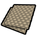
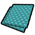

透明与增强玻璃类(stuffProps 含 Glass):独占窗户/天窗/玻璃台面/自动门等约 31 件透明件

强化工程级·石化工业·聚碳酸酯 Polycarbonate兼金属类
强化工程级家具建筑391防具109穿戴件21近战工具54远程武器7其它6共588件 价值10 质量0.25 护甲1.05/1.60/0.11 利钝0.90/1.40
Vile's Materials Science · def自带→石化工业(后期) · Things/Item/Material/PolycarbonateRed

塑料级·石化工业·有机玻璃 Plexiglass兼金属类
塑料级家具建筑270防具107穿戴件18近战工具50远程武器7其它6共458件 价值2 质量0.25 护甲0.75/1.40/0.10 利钝0.60/1
Vile's Materials Science · def自带→石化工业(后期) · Things/Item/Material/PolycarbonateClear